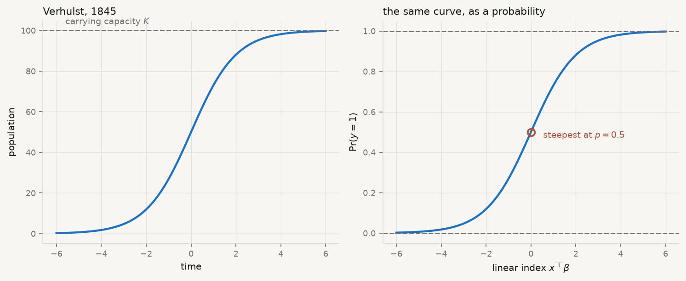

Everything so far has predicted a number. Most decisions are not numbers. Does this borrower default. Does this firm export. Does this country adopt the regulation. The outcome is a category, and the machinery of chapters 2 and 3 does not transfer intact.
The obvious move is to code the outcome as 0 and 1 and fit least squares to it anyway. That is the linear probability model, and it is not absurd — the fitted values estimate \(\operatorname{E}[y \mid x]\), which for a binary variable is exactly \(\Pr(y = 1 \mid x)\), and the coefficients read directly as changes in probability, which is what people want. It is used in serious applied work.
It also breaks in three specific ways, and being precise about which matters.
Run it: fit a probability with a straight line
import sys, warningssys.path.insert(0, "../slides"); sys.path.insert(0, "..")warnings.filterwarnings("ignore")from plotstyle import setup, CLplt = setup()import numpy as np, pandas as pd, statsmodels.api as sm, qmibloans = qmib.load("loans")y = loans["default"]X = sm.add_constant(loans[["fico", "int_rate", "log_annual_inc", "dti"]])lpm = sm.OLS(y, X).fit()p_hat = lpm.fittedvaluesprint(f"n = {len(loans):,} defaults = {y.sum():,} base rate = {y.mean():.2%}")print(f"\nfitted probabilities from the linear model:")print(f" minimum {p_hat.min():+.4f}")print(f" maximum {p_hat.max():+.4f}")outside = ((p_hat <0) | (p_hat >1)).sum()print(f" outside [0, 1]: {outside} of {len(p_hat):,} ({outside/len(p_hat):.2%})")
n = 9,578 defaults = 1,533 base rate = 16.01%
fitted probabilities from the linear model:
minimum -0.0283
maximum +0.3475
outside [0, 1]: 7 of 9,578 (0.07%)
First, it can return probabilities that are not probabilities. Seven fitted values here are negative. That is a small number, and it is worth resisting the textbook temptation to treat it as devastating: at a base rate of 16% with predictors of modest strength, most fitted values land comfortably inside the interval. The failure becomes severe when the base rate is near 0 or 1, or when a predictor takes values outside the range it was fitted on — that is, exactly when you extrapolate.
Second, the error variance cannot be constant. If \(y_i\) is Bernoulli with probability \(p_i\), then \(\operatorname{Var}(y_i) = p_i(1 - p_i)\) by construction. The variance is a function of the mean, largest at \(p = 0.5\) and vanishing at either end. Heteroscedasticity is not a defect of the data here; it is a property of binary outcomes, and no amount of clean data removes it. The coefficients remain unbiased — chapter 3’s table applies — but the classical standard errors are wrong, always, and robust standard errors are mandatory rather than optional.
Third, and most importantly, the functional form is wrong at the ends. A straight line says a fixed change in a predictor moves the probability by a fixed amount, whether you start at 0.02 or at 0.50. That is not how probabilities behave. Moving from near-certain-not to slightly-possible is a large change in the underlying propensity; moving from 0.50 to 0.55 is a small one. The line has no way to express that.
4.2 The logistic function, and where it came from
Pierre François Verhulst · 1804–1849
Named the logistic curve in 1845, modelling how populations stop growing.
Flameng, Léopold, 1850. Public domain, via Wikimedia Commons.
From the archive · Verhulst, 1845
Malthus had argued that population grows geometrically while subsistence grows arithmetically, so that catastrophe is arithmetic. Pierre François Verhulst, a Belgian mathematician, thought the premise wrong: unchecked exponential growth describes no actual population, because growth slows as a population approaches what its territory can support.
He wrote down the correction. If growth is proportional both to the current population and to the remaining room, the result is a curve that rises exponentially, inflects, and flattens toward a ceiling. He named it the logistic curve in 1845.
It arrived in statistics by a different road. Berkson proposed it in the 1940s as the natural transformation for dose-response data — the logit — arguing against the then-dominant probit on grounds of tractability and interpretation (Berkson 1944). Cox gave the regression treatment its modern form (Cox 1958). The function Verhulst wrote to describe populations pressing against a limit is now the standard way to model any bounded probability, which is the same mathematical situation: something that cannot exceed a ceiling and slows as it approaches one.
Show the code
z = np.linspace(-6, 6, 400)sigma =1/ (1+ np.exp(-z))fig, (ax1, ax2) = plt.subplots(1, 2, figsize=(9.4, 3.9))K =100ax1.plot(z, K * sigma, lw=2, color=CL.accent)ax1.axhline(K, ls="--", lw=1.2, color=CL.muted)ax1.text(-5.6, K *1.03, "carrying capacity $K$", fontsize=8.5, color=CL.muted)ax1.set_xlabel("time"); ax1.set_ylabel("population")ax1.set_title("Verhulst, 1845", fontsize=10, loc="left")ax2.plot(z, sigma, lw=2, color=CL.accent)for lev in (0, 1): ax2.axhline(lev, ls="--", lw=1.2, color=CL.muted)ax2.plot([0], [0.5], marker="o", ms=7, mfc="none", mec=CL.warn, mew=1.8)ax2.annotate("steepest at $p=0.5$", (0, 0.5), textcoords="offset points", xytext=(12, -6), fontsize=8.5, color=CL.warn)ax2.set_xlabel(r"linear index $x^\top\beta$"); ax2.set_ylabel(r"$\Pr(y=1)$")ax2.set_title("the same curve, as a probability", fontsize=10, loc="left")fig.tight_layout()

Figure 4.1: The logistic function. Left: as Verhulst wrote it, population against time approaching a carrying capacity. Right: as statistics uses it, a probability against a linear index — the same curve, relabelled.
The model replaces the straight line with that curve. Write the linear index as \(\eta_i = x_i^\top \beta\) and set
The function is bounded strictly between 0 and 1, so the first failure is gone by construction. It is symmetric about \(\eta = 0\), where \(p = 0.5\) and the slope is steepest, and it flattens in both tails, so the third failure is gone too: the same change in \(\eta\) moves the probability a great deal in the middle and hardly at all at the extremes.
Inverting it gives the form that explains the model’s vocabulary:
and setting its derivative to zero gives \(X^\top(y - \sigma(X\beta)) = 0\), which has no algebraic solution because \(\sigma\) is nonlinear in \(\beta\). The estimate is found numerically, by Newton–Raphson — equivalently, by iteratively reweighted least squares, which is the same computation dressed as a sequence of weighted regressions.
This is less alarming than it sounds. The log-likelihood for logistic regression is globally concave, so there is one maximum and any sensible optimiser finds it. The exception matters and is covered below.
Run it: the log-likelihood, and the score at the optimum
logit = sm.Logit(y, X).fit(disp=0)eta = X.to_numpy() @ logit.params.to_numpy()p =1/ (1+ np.exp(-eta))# The likelihood, written straight from the definition.ll_hand = (y * np.log(p) + (1- y) * np.log(1- p)).sum()print(f"log-likelihood by hand {ll_hand:>12.6f}")print(f"statsmodels {logit.llf:>12.6f}")# At the optimum the score must vanish: X'(y - p) = 0.score = X.to_numpy().T @ (y.to_numpy() - p)print(f"\nscore X'(y - p) at the optimum, largest element: {np.abs(score).max():.2e}")print(" (zero to numerical tolerance — that is what 'converged' means)")print(f"\nnull log-likelihood {logit.llnull:>12.4f}")print(f"McFadden pseudo-R² {1- logit.llf/logit.llnull:>12.5f}")
log-likelihood by hand -4068.055780
statsmodels -4068.055780
score X'(y - p) at the optimum, largest element: 5.09e-11
(zero to numerical tolerance — that is what 'converged' means)
null log-likelihood -4212.0203
McFadden pseudo-R² 0.03418
The pseudo-\(R^2\) is 0.034, and that number deserves a warning. McFadden’s statistic is not a proportion of variance explained and does not behave like \(R^2\); values that would be alarming in a linear model are ordinary here. Comparing it across models fitted to different samples, or treating 0.034 as “3.4% of something”, is a misreading.
4.4 Reading the coefficients
A logistic coefficient is a change in log-odds per unit of the predictor. Nobody thinks in log-odds. There are three standard translations, in increasing order of usefulness and decreasing order of popularity.
Odds ratio — \(e^{\beta_j}\), the multiplicative change in the odds per one-unit increase in \(x_j\), holding the rest of the index fixed. Constant across the range of \(x\), which is its convenience and its trap: constant on the odds scale means not constant on the probability scale.
Marginal effect — \(\partial p / \partial x_j = \beta_j\, p(1-p)\), the change in probability per unit of \(x_j\). It depends on where you are: the same coefficient moves the probability most near \(p = 0.5\) and least in the tails. The average marginal effect averages it over the observed sample, which is usually the number a reader wants.
Predicted probability — \(\sigma(x^\top\hat\beta)\) evaluated at specified values. The most honest presentation for a non-technical audience, because it makes the nonlinearity visible instead of hiding it in a ratio.
Run it: the same coefficient, three ways
b_fico = logit.params["fico"]print(f"coefficient on fico {b_fico:+.6f} (log-odds per point)")print(f"odds ratio, per point {np.exp(b_fico):.5f}")print(f"odds ratio, per 10 points {np.exp(10* b_fico):.4f}")ame = (b_fico * p * (1- p)).mean()print(f"\naverage marginal effect {ame:+.8f} per point")print(f" = {ame *10*100:+.3f} percentage points per 10 FICO points")print(f" statsmodels margeff: {logit.get_margeff().margeff[0]:+.8f}")# The same coefficient, at three different places on the curve.print("\nthe marginal effect is not one number:")for label, pv in (("a safe borrower (p=0.05)", 0.05), ("a typical one (p=0.16)", y.mean()), ("a risky one (p=0.50)", 0.50)):print(f" {label}: {b_fico * pv * (1-pv) *10*100:+.3f} pp per 10 points")
coefficient on fico -0.005655 (log-odds per point)
odds ratio, per point 0.99436
odds ratio, per 10 points 0.9450
average marginal effect -0.00073738 per point
= -0.737 percentage points per 10 FICO points
statsmodels margeff: -0.00073738
the marginal effect is not one number:
a safe borrower (p=0.05): -0.269 pp per 10 points
a typical one (p=0.16): -0.760 pp per 10 points
a risky one (p=0.50): -1.414 pp per 10 points
The last block is the argument against reporting odds ratios alone. One coefficient, one odds ratio — and a change of 10 FICO points moves the probability three times as much for a borderline borrower as for a safe one. An odds ratio conceals that; a marginal effect or a plot of predicted probabilities shows it.
There is a subtler problem with odds ratios that is widely committed. Logistic coefficients are identified only up to the scale of the unobserved error, and that scale changes when predictors are added — so coefficients from nested logistic models are not comparable the way linear coefficients are, and an apparent change on adding a control may be pure rescaling (Mood 2009). Compare average marginal effects or predicted probabilities across specifications, not raw coefficients or odds ratios.
4.5 Comparing models: the likelihood-ratio test
With no sums of squares there is no \(F\) test, but the likelihood supplies the analogue. For nested models, twice the difference in log-likelihood is asymptotically \(\chi^2\) with degrees of freedom equal to the number of restrictions:
from scipy import stats as stfull = logitsmall = sm.Logit(y, sm.add_constant(loans[["fico", "int_rate", "log_annual_inc"]])).fit(disp=0)lr =2* (full.llf - small.llf)pval = st.chi2.sf(lr, df=1)print(f"full model log-likelihood {full.llf:12.4f}")print(f"without dti log-likelihood {small.llf:12.4f}")print(f"\nLR statistic {lr:.4f} on 1 df, p = {pval:.4f}")print("dti adds nothing detectable here."if pval >0.05else"dti matters.")
full model log-likelihood -4068.0558
without dti log-likelihood -4068.0850
LR statistic 0.0584 on 1 df, p = 0.8090
dti adds nothing detectable here.
Note the discipline this enforces. Both models must be fitted to the same rows — a predictor with extra missing values silently changes the sample and the comparison becomes meaningless — and the test only applies to nested models. For non-nested candidates, AIC from chapter 3 is the tool.
4.6 Does the model discriminate, and is it calibrated?
Two different questions, routinely conflated.
Discrimination — can the model rank? The area under the ROC curve is exactly the probability that a randomly chosen positive case receives a higher predicted probability than a randomly chosen negative one (Hanley and McNeil 1982). 0.5 is coin-flipping; 1.0 is perfect separation.
Calibration — are the probabilities true? Among cases assigned 0.30, do about 30% turn out positive? The Brier score, the mean squared difference between predicted probability and outcome, penalises both errors at once (Brier 1950).
A model can discriminate well and be badly calibrated, or the reverse. Which matters depends entirely on the use: a ranking for a limited budget of inspections needs discrimination; a price that must reflect risk needs calibration.
Run it: AUC from its definition, as a rank statistic
from scipy.stats import rankdatafrom sklearn.metrics import roc_auc_score, brier_score_loss# AUC = P(score of a random positive > score of a random negative). That is the# Mann-Whitney U statistic, so it can be computed from ranks alone.r = rankdata(p)n1, n0 =int(y.sum()), int(len(y) - y.sum())auc_hand = (r[y ==1].sum() - n1 * (n1 +1) /2) / (n1 * n0)print(f"AUC by hand (Mann-Whitney) {auc_hand:.6f}")print(f"sklearn roc_auc_score {roc_auc_score(y, p):.6f}")brier = brier_score_loss(y, p)base = np.mean((y - y.mean()) **2)print(f"\nBrier score {brier:.6f}")print(f"predicting the base rate {base:.6f}")print(f"skill over base rate: {1- brier/base:.2%}")
AUC by hand (Mann-Whitney) 0.629502
sklearn roc_auc_score 0.629502
Brier score 0.130664
predicting the base rate 0.134437
skill over base rate: 2.81%
Both numbers are sobering and should be reported that way. An AUC of 0.63 is weak discrimination — better than chance, far from useful for an individual decision. The Brier score improves on simply predicting the base rate for everyone by under 3%. The model is real, in the sense that its coefficients are estimated precisely and the likelihood-ratio tests are significant, and it is close to useless as a device for deciding about a particular borrower. Those two facts are compatible, and a large \(n\) is what makes them compatible: with 9,578 observations, a very weak signal is statistically unmistakable.
4.7 When the outcome is ordered
Some categorical outcomes have an order — unlikely, somewhat likely, very likely. Multinomial logit would ignore the ordering; separate binary models would waste it. The ordinal model uses it, by fitting one slope and several thresholds:
Each threshold \(\tau_j\) marks a cut on the latent scale; the same\(\beta\) shifts every cut together. That is the proportional-odds assumption, and it is a real restriction: the effect of a predictor on moving from “unlikely” to “somewhat likely” is assumed identical to its effect on moving from “somewhat likely” to “very likely”.
Run it: an ordered outcome
from statsmodels.miscmodels.ordinal_model import OrderedModelgrad = qmib.load("ologit")grad["apply_c"] = pd.Categorical( grad["apply"], categories=["unlikely", "somewhat likely", "very likely"], ordered=True)om = OrderedModel(grad["apply_c"], grad[["pared", "public", "gpa"]], distr="logit").fit(method="bfgs", disp=0)print(f"n = {len(grad)} outcome: {list(grad['apply_c'].cat.categories)}")print(f"\n{'predictor':12}{'coef':>10}{'odds ratio':>13}")for name in ["pared", "public", "gpa"]: b = om.params[name]print(f"{name:12}{b:10.4f}{np.exp(b):13.4f}")print(f"\nthresholds (latent cutpoints): "f"{', '.join(f'{v:.3f}'for v in om.params[-2:].values)}")print("\nOne slope per predictor, two cutpoints — that is the proportional-odds")print("restriction. Test it before relying on it (Brant 1990); if it fails, a")print("multinomial model that ignores the ordering is the honest fallback.")
n = 400 outcome: ['unlikely', 'somewhat likely', 'very likely']
predictor coef odds ratio
pared 1.0476 2.8509
public -0.0586 0.9431
gpa 0.6158 1.8512
thresholds (latent cutpoints): 2.204, 0.740
One slope per predictor, two cutpoints — that is the proportional-odds
restriction. Test it before relying on it (Brant 1990); if it fails, a
multinomial model that ignores the ordering is the honest fallback.
Having a parent with a graduate degree multiplies the odds of being in a higher application category by about 2.85. The assumption that this multiplier is the same at both cutpoints should be tested rather than assumed (Brant 1990); when it fails, either a partial-proportional-odds model or the unordered multinomial below is preferable to a restriction the data reject.
4.8 When the categories have no order
With \(J\) unordered categories, one is chosen as the baseline and \(J-1\) binary comparisons are estimated jointly:
Every coefficient is therefore relative to the baseline, and changing the baseline changes all of them — without changing a single fitted probability. A multinomial result reported without naming the baseline cannot be read.
Run it: three unordered categories
hs = qmib.load("hsbdemo")hs["prog_c"] = pd.Categorical(hs["prog"], categories=["academic", "general", "vocation"])ses_code = pd.Categorical(hs["ses"], categories=["low", "middle", "high"]).codesmn = sm.MNLogit(hs["prog_c"].cat.codes, sm.add_constant(hs[["write"]].assign(ses=ses_code))).fit(disp=0)print(f"n = {len(hs)} baseline = academic")print(f"\n{'':10}{'general':>12}{'vocation':>12}")for i, name inenumerate(["const", "write", "ses"]):print(f"{name:10}{mn.params.iloc[i,0]:12.4f}{mn.params.iloc[i,1]:12.4f}")print(f"\nodds ratio for a 1-point writing score:")print(f" general vs academic {np.exp(mn.params.iloc[1,0]):.4f}")print(f" vocation vs academic {np.exp(mn.params.iloc[1,1]):.4f}")print(f"\nMcFadden pseudo-R² {1- mn.llf/mn.llnull:.4f}")
n = 200 baseline = academic
general vocation
const 2.9426 5.5388
write -0.0582 -0.1122
ses -0.6367 -0.4512
odds ratio for a 1-point writing score:
general vs academic 0.9435
vocation vs academic 0.8939
McFadden pseudo-R² 0.1072
The multinomial model carries an assumption that the ordinal one does not: independence of irrelevant alternatives. The ratio of probabilities for any two categories must not depend on what other categories exist. When alternatives are close substitutes the assumption fails, and the classic illustration is a transport choice between car, red bus and blue bus — introducing a bus of a different colour should not change the car’s share, and in a multinomial logit it does.
4.9 The failure mode worth knowing
Logistic regression has one dramatic failure, and it looks like success.
Separation — a predictor, or a combination of them, perfectly predicts the outcome in the sample. The likelihood then has no maximum: pushing the coefficient toward infinity keeps improving the fit, so the optimiser diverges. Estimates come back enormous with enormous standard errors, or the software reports non-convergence (Albert and Anderson 1984).
Run it: build a perfect predictor and watch it break
rng = np.random.default_rng(60033)n =60x = rng.normal(size=n)yy = (x >0).astype(int) # perfectly separated by constructionprint(f"n = {n}; the outcome is exactly 1 when x > 0, with no exceptions.")try: sep = sm.Logit(yy, sm.add_constant(x)).fit(disp=0, maxiter=200)print(f"\ncoefficient {np.asarray(sep.params)[1]:>14,.2f}")print(f"std. error {np.asarray(sep.bse)[1]:>14,.2f}")print(f"converged {sep.mle_retvals['converged']}")exceptExceptionas exc:print(f"\nestimation failed: {type(exc).__name__}: {exc}")print("\nThe fit does not merely become imprecise — it ceases to exist. Pushing")print("the coefficient toward infinity keeps improving the likelihood, so there")print("is no maximum to find; the curvature the optimiser needs goes to zero and")print("the matrix it must invert becomes singular. Whether your software returns")print("an enormous coefficient, a warning, or an exception is an accident of its")print("implementation, not a difference in the underlying problem.")# The penalised estimator has a finite maximum even under separation.from statsmodels.discrete.discrete_model import Logitpen = Logit(yy, sm.add_constant(x)).fit_regularized(alpha=1.0, disp=0)print(f"\nwith an L2 penalty, the coefficient is finite: "f"{np.asarray(pen.params)[1]:.4f}")
n = 60; the outcome is exactly 1 when x > 0, with no exceptions.
estimation failed: LinAlgError: Singular matrix
The fit does not merely become imprecise — it ceases to exist. Pushing
the coefficient toward infinity keeps improving the likelihood, so there
is no maximum to find; the curvature the optimiser needs goes to zero and
the matrix it must invert becomes singular. Whether your software returns
an enormous coefficient, a warning, or an exception is an accident of its
implementation, not a difference in the underlying problem.
with an L2 penalty, the coefficient is finite: 5.7571
The wrong response is to report the number. The right one is to recognise the diagnosis — check for a predictor that separates the outcome, especially a rare category or a small subgroup — and then either drop the offending variable, merge categories, or use a penalised estimator. Firth’s method adds a penalty that guarantees finite estimates and reduces small-sample bias at the same time (Firth 1993).
4.10 A short review of the literature
The curve predates the statistics by a century: Berkson (1944) proposed the logit for bio-assay against the entrenched probit, and Cox (1958) gave binary regression its modern treatment. The two transformations remain nearly indistinguishable in fit and differ mainly in the interpretability of their coefficients.
Assessment splits along the discrimination–calibration line. Hanley and McNeil (1982) gave the AUC its standard exposition and its rank interpretation — the property that lets it be computed from a Mann-Whitney statistic, as above. Brier (1950), published in meteorology and largely ignored by econometrics for decades, is the canonical proper scoring rule for probability forecasts, and remains the right answer when the probabilities themselves matter rather than their ordering.
The comparability problem is the most under-appreciated result in applied use. Mood (2009) showed that logistic coefficients are confounded with the scale of the unobserved error, so adding controls rescales them and cross-model comparison of coefficients or odds ratios is not valid — a practice that remains routine. Average marginal effects are the standard remedy.
For extensions, Brant (1990) supplies the test of the proportional-odds restriction that ordinal models assume and rarely check. On the failure of estimation, Albert and Anderson (1984) characterised exactly when maximum likelihood estimates fail to exist under separation, and Firth (1993) supplied the penalty that is now the standard fix.
4.11 What to report
The base rate. Every performance number is meaningless without it; 95% accuracy on a 5% outcome is achieved by predicting “no” for everyone.
Coefficients as odds ratios, with marginal effects beside them. The odds ratio is constant and the probability change is not, and the reader needs both to know what a coefficient means where they intend to use it.
A nested comparison, as a likelihood-ratio test, fitted to identical rows, with the restriction stated.
Discrimination and calibration, separately. AUC and Brier, each against its baseline, with a sentence on which one the intended decision needs.
The assumption the extension rests on. Proportional odds for ordinal; independence of irrelevant alternatives for multinomial. Say that you tested it, or say that you did not.
What the model does not license. These are associations in a sample of borrowers who were granted loans — a population already selected by the lender’s own approval rule, which is not a random sample of applicants and certainly not of people. Chapter 10 gives that problem its name.
Albert, A., and J. A. Anderson. 1984. “On the Existence of Maximum Likelihood Estimates in Logistic Regression Models.”Biometrika 71 (1): 1–10. https://doi.org/10.1093/biomet/71.1.1.
Berkson, Joseph. 1944. “Application of the LogisticFunction to Bio-Assay.”Journal of the AmericanStatisticalAssociation 39 (227): 357–65. https://doi.org/10.1080/01621459.1944.10500699.
Brant, Rollin. 1990. “AssessingProportionality in the ProportionalOddsModel for OrdinalLogisticRegression.”Biometrics 46 (4): 1171. https://doi.org/10.2307/2532457.
Hanley, J A, and B J McNeil. 1982. “The Meaning and Use of the Area Under a Receiver Operating Characteristic (ROC) Curve.”Radiology 143 (1): 29–36. https://doi.org/10.1148/radiology.143.1.7063747.
Mood, C. 2009. “LogisticRegression: WhyWeCannotDoWhatWeThinkWeCanDo, and WhatWeCanDoAboutIt.”EuropeanSociologicalReview 26 (1): 67–82. https://doi.org/10.1093/esr/jcp006.